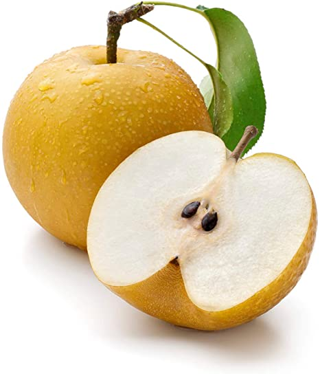
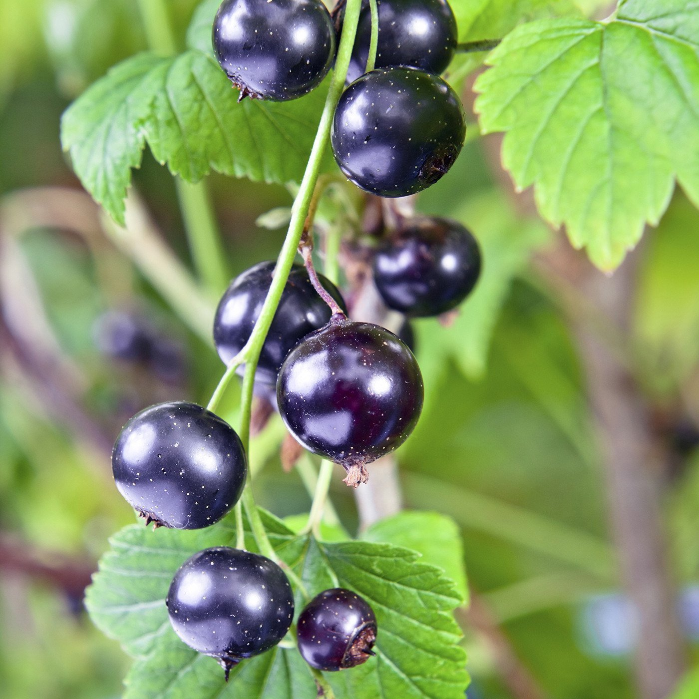

| Name |
Image |
Benefits |
| Korean Pear |
 |
This fruit is the Korean Pear. Popular among asian countries, it is also known as the asian pear, chinese pear,
and others. It is differentiated by it's intense sweet flavor and crisp texture. Asian pears are a great source of dietary
fiber, which helps the digestive system maintain a healthy level of good bacteria and can help regulate cholesterol.
|
| Lychee |
 |
This fruit is the Lychee. Mainly grown in Asia, it features a spiky red exterior, with a sweet taste and smooth surface
to the white flesh. The meat surrounds the waxy brown seed in the middle of the fruit. Lychee is a rich source of nutrient
that is required for the production of blood. It provides manganese, magnesium, copper, iron and folate that are required
for the formation of RBC.
|
| Kumquat |
 |
This fruit is the kumquat. Similar to other citruses such as the orange or lemon, it is waxy on the exterior, with a sweet
and sour taste. The fruit is known to be used in teas to soothe the throat when sick. Kumquats are an excellent source of
vitamin C. They're also rich in fiber and water, making them a weight loss friendly food.
|
| Blackcurrant |
 |
This fruit is the blackcurrant very similar to grapes. However the blackcurrant is a berry despite it's appearance. It features
a tart taste and earthy sweetness. In addition to vitamin C, blackcurrants have plenty of antioxidants and anthocyanins.
These can help strength your immune system, soothe sore throats, and ease flu symptoms.
|
| Dragonfruit |
 |
This fruit is the dragonfruit, grown in Asia, and immensely popular. It features a red exterior with leave like
skin, and the inside is crisp white, with black seeds spread throughout. It is rich in antioxidants, high in fiber,
and helps strengthen the immune system with probiotics.
|